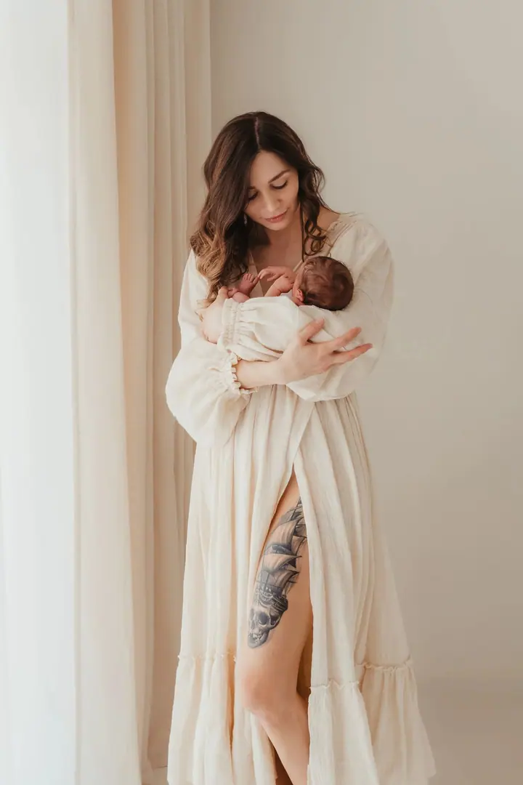
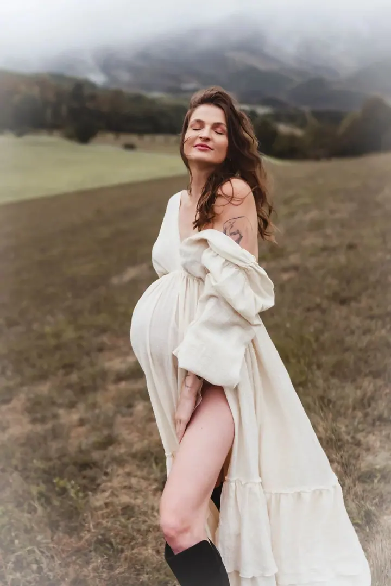
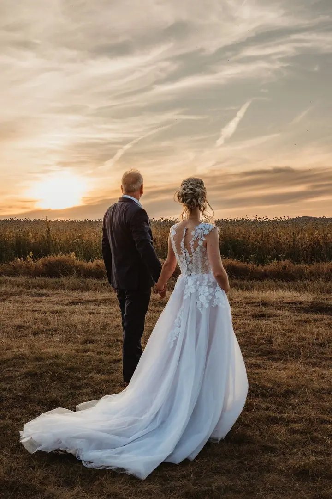

Focení miminek u vás doma
Fotím první dny s miminkem u vás doma, bez spěchu a stylizace. Focení není časově omezené a řídí se tempem miminka i celé rodiny.

Jmenuji se Bára Verešová a fotím miminka, maminky v očekávání i celé rodiny v Praze a okolí. Nejraději u vás doma, při denním světle a v tempu, které určuje miminko. Nem…
Rezervovat termínJsem fotografka, bývalá markeťačka, manželka a maminka. Focení miminek se věnuji už několik let a každé focení vnímám jako jedinečné setkání. Nejde mi o množství fotografií, ale o atmosféru, emoce a příběh, který v sobě nesou.


Věřím, že dobrá fotka nevzniká jen díky drahé technice, ale hlavně díky atmosféře, kterou spolu během focení vytvoříme. Proto si zakládám na přátelském a uvolněném přístupu, abyste se u mě cítili pohodlně a přirozeně. Nevytvářím obrazy podle šablon, hledám to, co je pro vaši rodinu opravdové.
Ve focení hledám klid, důvěru a opravdovost. Stejný přístup, jaký mám ke své rodině, přenáším i do focení té vaší. Pokud je vám tenhle přístup blízký, budu ráda, když se mi ozvete.
Co fotím
Fotím první dny s miminkem u vás doma, bez spěchu a stylizace. Focení není časově omezené a řídí se tempem miminka i celé rodiny.
Přirozenost, světlo a atmosféra období, kdy čekáte miminko. Na focení vám ráda zapůjčím šaty a poradím, jak se před objektivem pohybovat.
Focení o vztazích, energii a o tom, jací spolu opravdu jste. Bez nuceného pózování a s respektem k dětem i jejich tempu.
Reportážně během celého dne, k tomu klidné párové focení. Emoce, detaily a příběh vašeho dne zachycené přirozeně a s lehkostí.
Postup
Pošlete mi zprávu přes formulář a napište, o jaké focení máte zájem. Ozvu se do 24 hodin a společně probereme vaši představu.
Termín vám závazně zarezervuji. Před focením spolu projdeme lokaci, oblečení i atmosféru, kterou si přejete zachytit.
Fotíme klidně, bez spěchu a bez nucených póz. Přizpůsobím se vám, dětem i miminku, ať se chce tulit, nakrmit, nebo jen odpočívat.
Do 14 dnů dostanete náhledovou galerii, ze které si vyberete fotografie. Ty pak upravím ve svém stylu a pošlu vám je do online galerie.
Otázky
U vás doma v Praze a okolí, kde se cítíte jistě a v klidu. Nemusíte nikam jezdit ani nic složitě připravovat. Fotím také přímo v porodnici, v rámci focení FRESH 48.
Vůbec ne. Nemusíte mít s focením žádné zkušenosti. Vedu vás velmi jemně a jde mi hlavně o přirozenost, ne o dokonalé pózy.
Nemusíte. K těhotenskému i rodinnému focení vám ráda zapůjčím šaty a rekvizity pro maminku i miminko a předem vám poradím se stylingem.
Těhotenské focení začíná na 5 900 Kč a focení miminka u vás doma na 7 500 Kč. Konkrétní podobu vám ráda navrhnu podle toho, co si přejete uchovat.